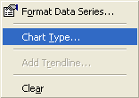
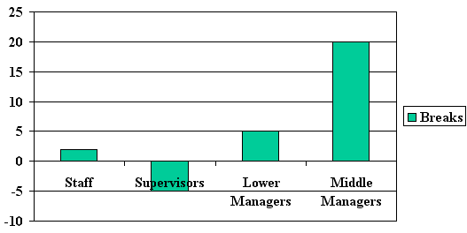

Free
powerpoint
Tutorials
|
Free
powerpoint
Tutorials
|
|
 home home |
Stay at Home and Learn | ||||
2D Bar Charts in PowerPoint |
|||||
|
Charts 1, 2, 3, 4, 5, 6, 7, 8, 9, 10, 11, 12 Flow Charts Tables
For our final chart, slide number 4, we have a 2D bar chart. You'll get some more practice with designing and formatting charts in this section. But here's the chart you're going to be creating:
This chart looks more complex than the other two you designed, in that there is more information to convey. What it shows is how long employees are spending on their breaks. They have 1 hour per day of breaks. The question is, are they going over this one hour, or under? The red bars show which employee group is going over the one hour, and the blue bar shows that only the Supervisors are taking less than one hour. The average for the Supervisors is 5 minutes per hour less each day. Middle managers are going over the one hour by an average of 20 minutes each day! Start constructing this chart in the same way you did for the other two:
Average time spent on breaks The font we used was Arial. The first line is size 44, and the second line is size 20. When you've entered the Title, your slide 4 should look like this: Double click the chart area to add a chart, and you should see a default chart appear, along with the Datasheet. Delete Rows 2 and 3, just as you did for the other two charts. Then enter the following information: When you're finished, your Datasheet should look like this:
And the chart itself will look like this: This is a 3D bar chart, which we don't want. To turn it into a 2D one, right click the chart and select Chart Type from the menu:  You'll see the same dialogue box you saw for the Pie Chart. This time, select Column from the chart types on the left hand side:
From the right hand side, select the first chart sub-type, which is Clustered Column. (The one highlighted in black, in the image above.) Click OK on the dialogue box. Your chart will then look like this:  We can format the bars first, and give them a different colour. We'll do that in the next part.
|
||||